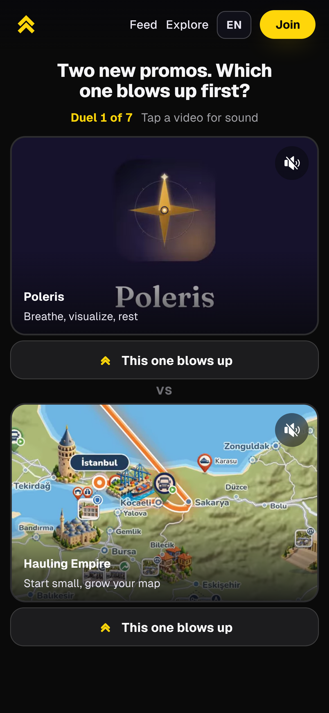

Seven duels.
One minute.
Which one
blows up
first?
Hauling Empire
Your first truck
Nicheable
Rental tax sheet
VS
This one blows up
Your pick,
one tap.
7 duels.
About a minute.
No account needed. Play it in your browser.

Play the
Duel.
promovote.com/duel
Link in our profile